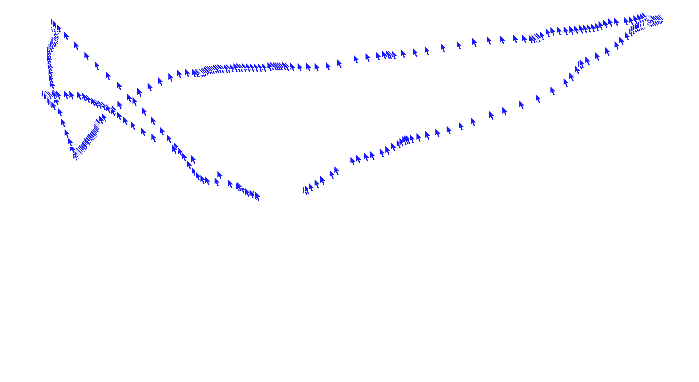

This is what it usually takes for a user to disable the autoplay
function on each platform.
Toggle the paths to compare them.
Back
Click on the back button in the player window.
Tempo: 6s
Interazioni:5
scroll:600px

Next
Hide and seek
The autoplay feature has proven to be an essential part of the user experience, keeping the users inside a possibly endless flow of content. Its effectiveness as a user retention device sometimes leads streaming services to strategically conceal the disabling function, making it a real challenge to opt out of this feature.
Enter